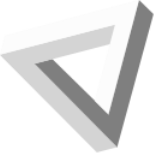

Gå til innhold

Rutiner for SITS
Registrering av ikke-timeplanlagt undervisning
Starter søk
For lærere
Felles for administrasjon
Norsk
Tilrettelagt opplæring
FOV
Andre tilbud
Servicesenter
Rutiner for SITS
For lærere
For lærere
For alle lærere
For alle lærere
Administrere egen konto
Se og rediger personopplysninger
Finn timeplaner
Se og rediger klasselister
Føre fravær
Sluttføre deltaker
Registrere deltaker til norskprøven
Oppdatere norsknivå
Registrere lesekartlegging
Bare for lærere i FOV
Bare for lærere i FOV
Vedtak om særskilt språkopplæring
Generere varselbrev om IV
Behandle IUP
Bare for lærere i ITO
Bare for lærere i ITO
Registrering av ikke-timeplanlagt undervisning
Bekrefte deltakelse
Føre samtalelogg
Felles for administrasjon
Felles for administrasjon
Bruk av SITS Live
Bruk av SITS Live
Diverse handlinger i SITS
Deltakerbehandling
Deltakerbehandling
Registrere ny deltaker utenom servicesenteret
Nytt studieløp for deltaker
Melde på eller av kurs
Føre fravær
Sluttføre deltaker
Endre rettigheter på en deltaker
Flytte timer mellom to SPR
Behandle skjermede personer
Behandle avdøde personer
Endre personalia på deltaker
Oversikt og kontroll
Oversikt og kontroll
Kontrollere egen datakvalitet
Rapport for skyssrefusjon
Oversikt over rapporter
Se timeplan for deltakere og ansatte
Oversikt over gyldige SPR
Finne undervisningsrom
Generere og kontrollere brev
Kursbehandling
Kursbehandling
Lage og slette kurs
Endre på kurs
Norsk
Norsk
Deltakerbehandling
Deltakerbehandling
Behandle asyl-deltakere
Behandle kollektiv beskyttelse
Behandle nav-betal (samarbeidsavtalen)
Lage NiR vedtak
Endre norsk-rettighet
Endre norskplan
Behandle deltakere som ønsker få uketimer
Behandle permisjon fra opplæring
Sluttføre deltaker ved utgått rett
Melde på norskoprøve
Behandle deltakere som flytter
Oversikt og kontroll
Oversikt og kontroll
Oversikt over brev til deltaker
Finn deltakere med utgående rett
Kontrollere overføringer til NiR
Få oversikt over betalende deltakere
Kjøre refusjonsrapporter
Tilrettelagt opplæring
Tilrettelagt opplæring
Deltakerbehandling
Deltakerbehandling
Behandle ikke-timeplanfestet opplæring
Oversikt og kontroll
Oversikt og kontroll
Se lærers økter uteonom timeplan
FOV
FOV
Deltakerbehandling
Deltakerbehandling
Endre modul og status på fag
Oversikt og kontroll
Oversikt og kontroll
Se deltakere på venteliste
Andre tilbud
Andre tilbud
Utdanningsløftet
Ungdommer til Fram
Servicesenter
Servicesenter
Deltakerbehandling
Deltakerbehandling
Behandle søknad om utsatt start
Registrere nytt individ i SITS
Registrere søknad
Registrere kartlegging
Overføre søknad
Fatte vedtak
Oversikt og kontroll
Oversikt og kontroll
Se hvem som trenger vedtak
Innlogging